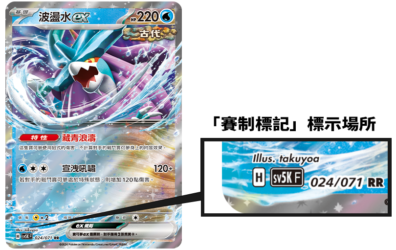

玩法
— 影片 —
— 點我查看看更多 —
賽制
「地區聯盟賽」或「道館賽」等官方比賽中，為達成公平競賽之要件，將引進「賽制」，此規則下之卡牌清單，方為遊戲對戰可能範圍。
私下和家人朋友同樂時，毋須遵守此規範。
| 如何確認卡牌是否可使用

請見卡面左下方的「賽制標記」，由此進行確認。
「賽制標記」標示於卡面左下方，為管理賽制之標記。
| 標準賽制
關於標準賽制
此賽制以新款卡牌為主，訂定其使用範圍，讓新手玩家也可輕鬆上手，多數官方比賽以此為規範進行賽事。
標準賽制下可使用之卡牌清單
卡面左下方的「賽制標記」標示為F、G、H者。
過往系列中可使用之卡牌清單
下列卡牌為「太陽&月亮」或「劍&盾」系列，其「賽制標記」雖為A、B、C、D或E，但可以加入牌組。卡牌內容則使用最新款之文字敘述方式。
- 「能量轉移」
- 「粉碎之錘」
- 「神奇糖果」
- 「精靈球」
- 「高級球」
- 「千金小姐」
- 「凸凸頭盔」
- 「能量輸送」
- 「改造之錘」
- 「能量回收」
- 「超級球」
- 「寶可夢交替」
- 「學習裝置」
- 「能量籤」
- 「巢穴球」
- 「博士的研究」
- 「寶可裝置3.0」(將「寶可齒輪3.0」視為同一張卡牌使用)
- 「傷藥」
- 「朋友手冊」
- 「寶可夢捕捉器」
- 「裁判」
- 「謎之化石」
- 「活力頭帶」
- 「老大的指令」
- 「反擊捕捉器」
| 開放賽制
關於開放賽制
與標準賽制不同，此賽制允許使用早期販售的卡牌，可使用的卡牌種類豐富，會帶來不同的遊戲感受。
開放賽制下可使用之卡牌清單
- 「寶可夢卡牌遊戲 朱&紫」系列
- 「寶可夢卡牌遊戲 劍&盾」系列
- 「寶可夢卡牌遊戲 太陽&月亮」系列
下列卡牌不能加入牌組
- 瑪夏多（特性「破罐破摔」）
- 全滿藥
- 阿塞蘿拉
- 夢妖魔（特性：神秘遺言）
- 麗棗&哈奇酷俠
對戰環境會因為推出的寶可夢世代而與時俱進，不能使用的卡片也可能會改變，牌牌樂會遵從寶可夢PTCG官方指南不定期更新賽制。
詳細規則
| 進階玩家指南
進階玩家專用規則指南
| 比賽規則
以新款卡牌為主，訂定其使用範圍，讓新手玩家也可輕鬆上手，多數官方比賽以此為規範進行賽事。